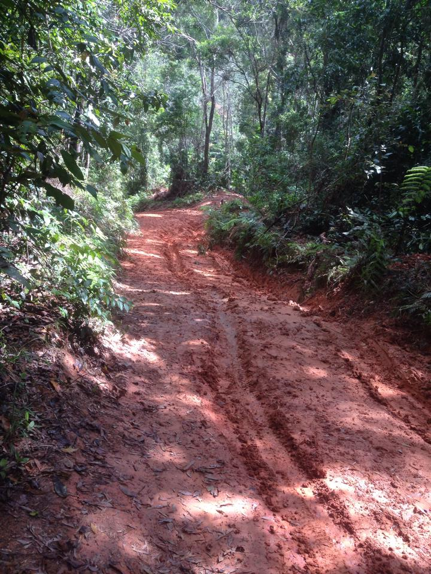
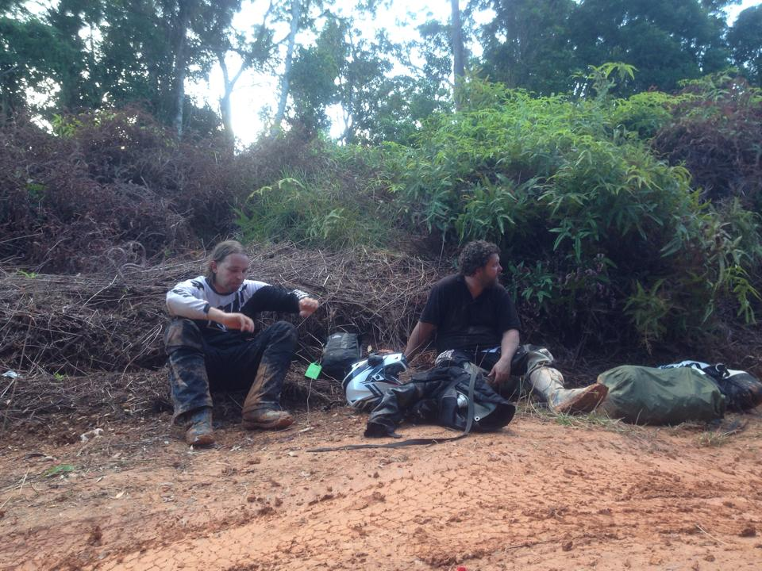
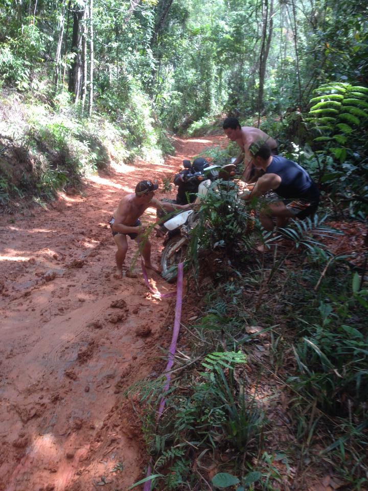
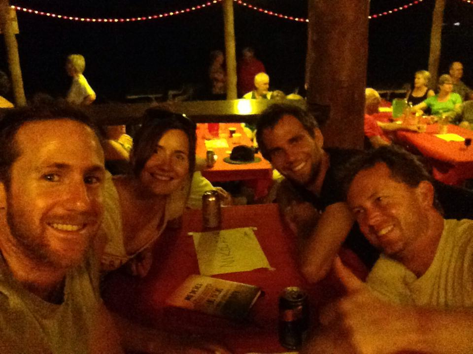
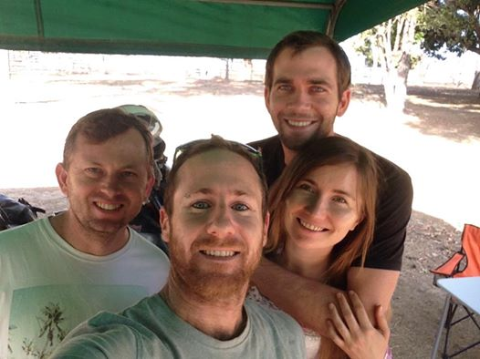
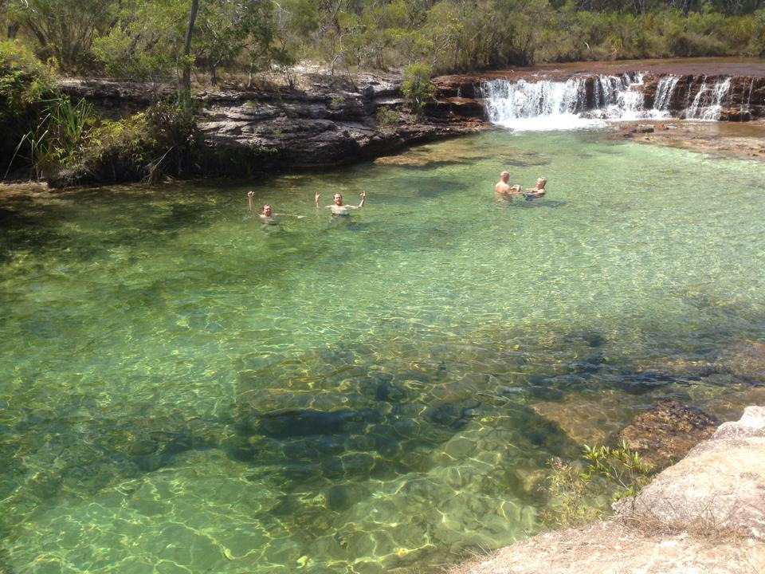

Photos
The rear box of the KTM690, voltmeter, 12V plugs

The rear box of the KTM690, internal lighting

The KTM690, packed and ready

The KTM690, packed and ready to trailer to Mossman

Getting ready to leave Mossman 2015-08-24

Getting ready to leave Mossman 2015-08-24
Getting ready to leave Mossman 2015-08-24

North across Daintree River, onto Creb Track (map)

The KTM690 had clutch problems and could not make the Creb Track. Go-around.

Creb Track, creek crossing

Creb Track, creek crossing
Creb Track

Greg and Rob, Creb Track

Lifting motorcycles up the Creb Track

A sleeping motorcycle on the Creb Track
.JPG)
Athol on Creb Track
.JPG)
The Creb Track Track
.JPG)
Creb Track
.JPG)
Rob and Greg, Creb Track
.JPG)
Creb Track
.JPG)
The Lion's Den Hotel 2015-08-26 (map)
.JPG)
The Lion's Den Hotel 2015-08-26 (map)

Rob, Greg, Tony, Athol and Dan

Greg, Tony, Rob, Athol and Dan at Lion's Den Hotel

Rob and Greg fishing in the Annan River, just south of Cooktown

A crocodile in the Annan River

Fuel, just before entering Lakefield National Park
.JPG)
Southern end of Lakefield National Park 2015-08-26 (map)

Lakefield National Park
.JPG)
Stopped somewhere in Lakefield National Park for sunscreen 2015-08-26

Stopped for a break somewhere in Lakefield National Park

Old Breeza Homestead (map)

Tony

Low Lake (map). Rob has just fractured his foot in three places, falling off his bike while parking

Low Lake (map) 2015-09-26
.JPG)
Low Lake (map) 2015-09-26
.JPG)
Low Lake (map) 2015-09-26
.JPG)
Between Low Lake and Musgrave Roadhouse, to start making plans for Rob's fractured foot. (map)

Musgrave Roadhouse (map) 2015-08-27. Rob is heading back in the car to Cooktown Hospital.

Musgrave Roadhouse (map) 2015-08-27. Dan arrives in the car to transport bike and Rob back to Cooktown.

Archer River Roadhouse (map) 2015-08-27. Greg turns back to Cooktown due to mechanical failure on his DRZ400.

Athol and Tony, somewhere north of Archer River 2015-08-27

Athol and Tony, somewhere north of Archer River 2015-08-27

Wenlock River Bridge (map) 2015-08-27

Wenlock River Bridge (map) 2015-08-27

Bramwell Junction Roadhouse (map)
.JPG)
Bramwell Junction Roadhouse with bargains on cold drinks
.JPG)
Bramwell Station (map) 2015-08-27

Bramwell Station (map) 2015-08-27

Bramwell Station (map) 2015-08-27

Bramwell Station (map) 2015-08-27

Bramwell Station
.JPG)
Bramwell Station bar
.JPG)
Tony and Athol, Bramwell Station
.JPG)
We met Uliana and Gaël at Bramwell Station on the way up.

Tony, Athol, Uliana and Gaël

Fruit Bat Falls turn-off (map) 2015-08-28

Fruit Bat Falls turn-off (map) 2015-08-28

Fruit Bat Falls turn-off (map) 2015-08-28
.JPG)
Athol at Fruit Bat Falls turn-off (map) 2015-08-28
.JPG)
Fruit Bat Falls (map)

Fruit Bat Falls (map)

Fruit Bat Falls (map)

Fruit Bat Falls (map)

Fruit Bat Falls

Arriving at Bamaga (map) 2015-09-28. First phone reception since Cooktown.

Arriving at Bamaga (map) 2015-09-28. First phone reception since Cooktown.

Arriving to Punsand Bay (map) 2015-09-28. First sight of coastline.

Punsand Bay Resort
.JPG)
Gear unloaded at Punsand Bay, 7 kilometres to the tip (map) 2015-09-28

The Tip, looking NNW (map)

The Tip, looking West (map)

Athol, high-fiving The Tip (map) 2015-09-28

Athol at The Tip (map) 2015-09-28

Athol, at The Tip (map) 2015-09-28

Tony, at The Tip (map) 2015-09-28

Athol, at The Tip (map) 2015-09-28

Athol and Tony, at The Tip (map) 2015-09-28

Heading back to Punsand Bay, after The Tip

Bamaga, after staying the night at Punsand Bay, turned around for Cooktown (map). 2015-09-29

Jardine River Ferry crossing (map)

Jardine River Ferry crossing (map)

One of the many back roads to Bramwell Station

Athol arriving at a turn-off to Bramwell Station 2016-08-29

Leaving Bramwell Station for Cooktown 2016-08-30

Looking south from main turn-off to Bramwell Station 2016-08-30

Athol at Archer River crossing 2016-08-30

Athol at Archer River crossing 2016-08-30

An Eastern Brown Snake that was accidentally hit by a motorcycle. We were forced to euthanise :(
.jpeg)
Saltwater Creek camping area (map). 2016-08-30
.JPG)
Saltwater Creek camping area (map). 2016-08-30

Saltwater Creek camping area, parked up for the night (map). 2016-08-30

Saltwater Creek camping area, parked up for the night (map). 2016-08-30

Saltwater Creek camping area, parked up for the night (map). 2016-08-30

Saltwater Creek camping area (map). 2016-08-30
.JPG)
Saltwater Creek camping area (map). 2016-08-30
.JPG)
Saltwater Creek camping area (map). 2016-08-30
.JPG)
Red Lily Lagoon (map). 2015-08-31

Couple of Jabiru

The KTM690 rear box has broken its mount, fallen in front of the exhaust and caught fire.

The KTM690 rear box has broken its mount, fallen in front of the exhaust and caught fire.

Mossman, packed up and ready for the drive home. 2016-09-01

Driving home, Rob's fractured foot elevated. 2016-09-02

KTM690 back home in Brisbane 2016-09-02

KTM690 rear tyre, was new

KTM690 broken rear rack

DRZ400
.JPG)
KTM690
.JPG)
Athol, DRZ400
.JPG)
Rob and Athol
.JPG)
Rob's foot after appropriate medical treatment


{kind=link}
{kind=link}
{kind=link}
{kind=link}
{kind=link}
{kind=link}
{kind=link}